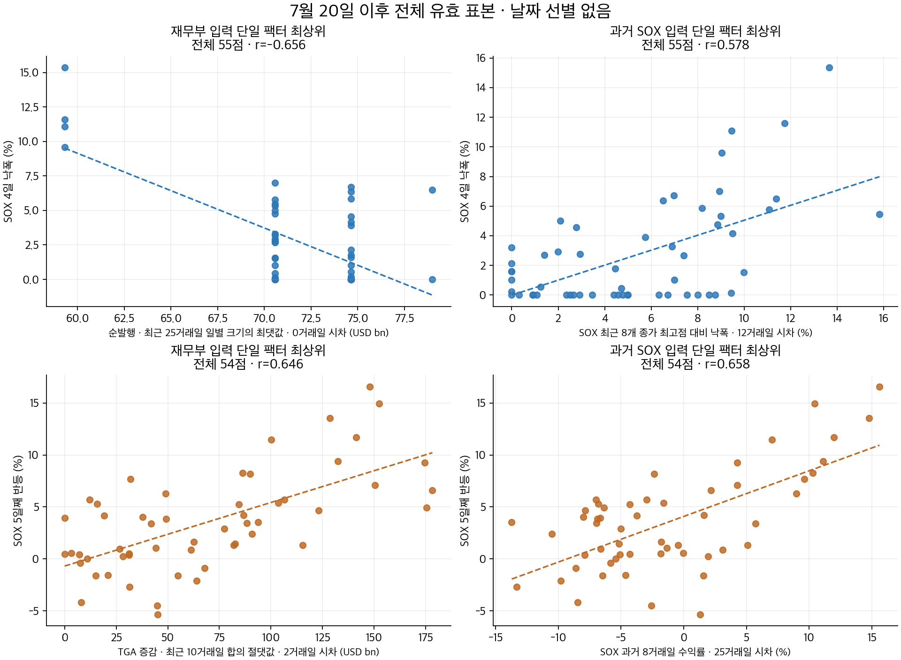

7월 20일 이후 전체 기간 · 단일 팩터 탐색
2026-07-20~2026-10-09 · 59거래일
모든 결과가 확정된 날짜를 동일하게 사용했습니다. 날짜 조건·부분 표본·다중 팩터 회귀·비선형 합성 점수는 사용하지 않았습니다.
기존 11점/10점 조건부 차트와 다른 실험입니다. 최신 SOX는 2026-10-09, TGA는 2026-10-08까지 발표됐습니다. 누적·시차 팩터 때문에 시작 날짜를 잃지 않도록 2026-02-02부터의 자료는 이전 입력 계산에만 사용했습니다. 7월 20일 이전 이벤트는 상관 계산에 넣지 않았습니다.
미래 4거래일 낙폭과 5거래일째 반등이라는 기존 결과 산식은 유지했습니다. 아직 이후 종가가 없는 마지막 날짜는 관측 중으로 남기며 0으로 채우지 않습니다. N은 SOMA 제외 액면 순발행 대용치이고 d는 기존 ΔTGA−N입니다.
후보 산식 4,635개: 단일 입력의 누적·절댓값·표준편차·최대 크기, 과거 SOX 수익률·변동성·낙폭·평균 대비 괴리입니다. 구간 1, 2, 3, 4, 5, 6, 8, 10, 12, 15, 20, 25, 30, 40, 50, 60거래일, 시차 0, 1, 2, 3, 4, 5, 6, 8, 10, 12, 15, 20, 25, 30, 40거래일을 같은 전체 표본에서 비교했습니다. 결과를 보고 고른 탐색 성적이며 미래 성능을 검증한 값은 아닙니다.
처음에는 20일 구간·10일 시차까지 비교했으나 낙폭 최고 후보가 두 경계에 걸려, 60일 구간·40일 시차까지 한 번 확장했습니다. 전체 이벤트 날짜는 그대로입니다. 첫 탐색 결과와 확장 범위를 함께 보관했습니다.

4일 낙폭 · 전체 55점
확정 이벤트 2026-07-20~2026-10-05 · 관측 중 4일: 2026-10-06, 2026-10-07, 2026-10-08, 2026-10-09
재무부 단일 팩터 최상위: 순발행 · 최근 25거래일 일별 크기의 최댓값 · 0거래일 시차 · r=-0.656
과거 SOX 단일 팩터 최상위: SOX 최근 8개 종가 최고점 대비 낙폭 · 12거래일 시차 · r=0.578
기존 불일치 크기의 전체 표본 r=-0.128
재무부 최고 팩터의 X 값은 4종입니다. 이동 최댓값처럼 같은 값이 반복되는 팩터도 모든 날짜를 그대로 포함했으며, 겹친 점을 임의로 흩뜨리지 않았습니다.
비교 가능한 단일 팩터 4,633개가 모두 같은 55개 날짜를 사용했습니다. 입력이 부족한 팩터는 날짜를 줄이는 대신 후보에서 제외했습니다.
전체 순위 CSV
5일째 반등 · 전체 54점
확정 이벤트 2026-07-20~2026-10-02 · 관측 중 5일: 2026-10-05, 2026-10-06, 2026-10-07, 2026-10-08, 2026-10-09
재무부 단일 팩터 최상위: TGA 증감 · 최근 10거래일 합의 절댓값 · 2거래일 시차 · r=0.646
과거 SOX 단일 팩터 최상위: SOX 과거 8거래일 수익률 · 25거래일 시차 · r=0.658
기존 불일치 크기의 전체 표본 r=-0.018
재무부 최고 팩터의 X 값은 54종입니다. 이동 최댓값처럼 같은 값이 반복되는 팩터도 모든 날짜를 그대로 포함했으며, 겹친 점을 임의로 흩뜨리지 않았습니다.
비교 가능한 단일 팩터 4,633개가 모두 같은 54개 날짜를 사용했습니다. 입력이 부족한 팩터는 날짜를 줄이는 대신 후보에서 제외했습니다.
전체 순위 CSV